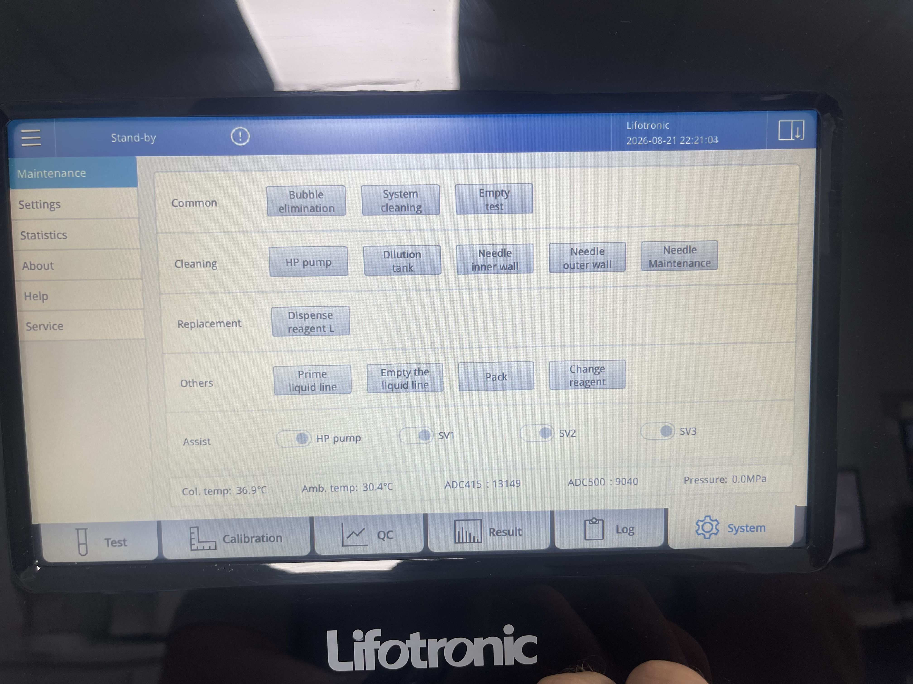
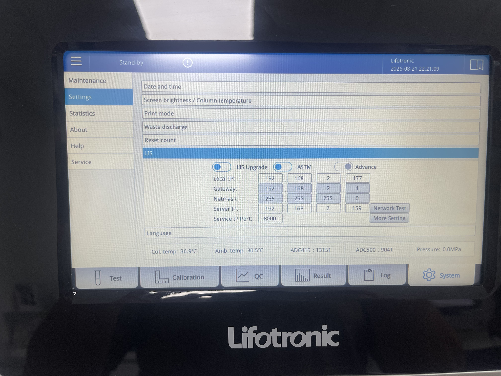
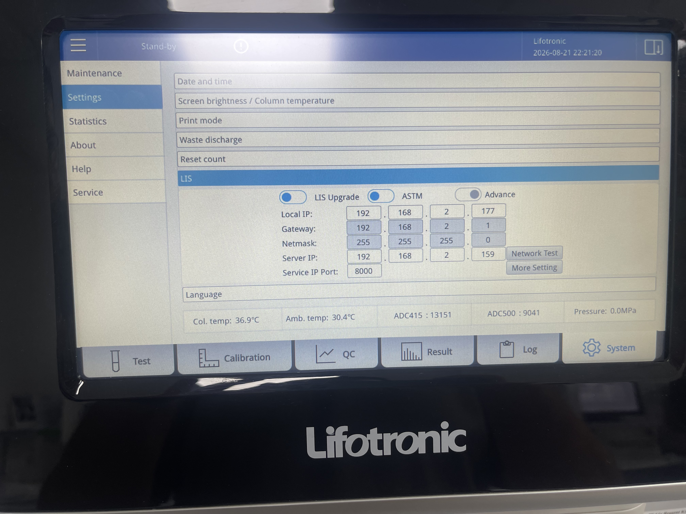
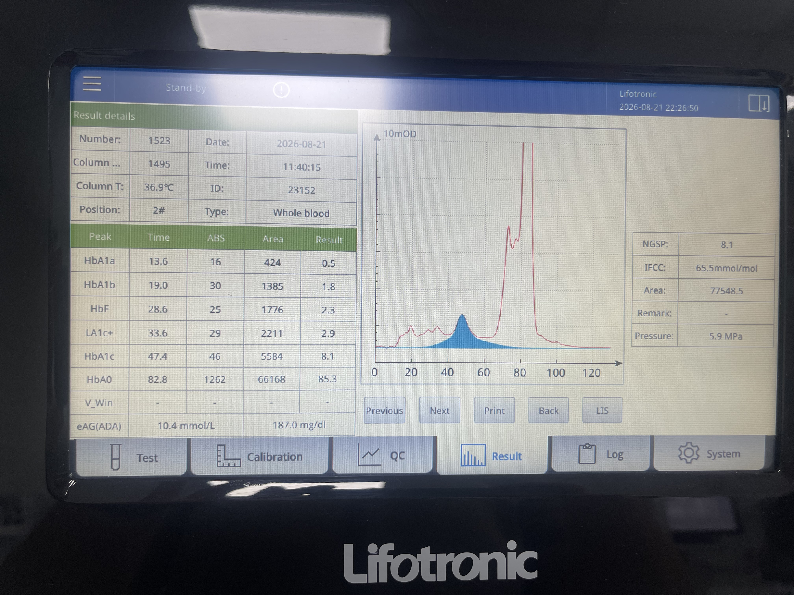
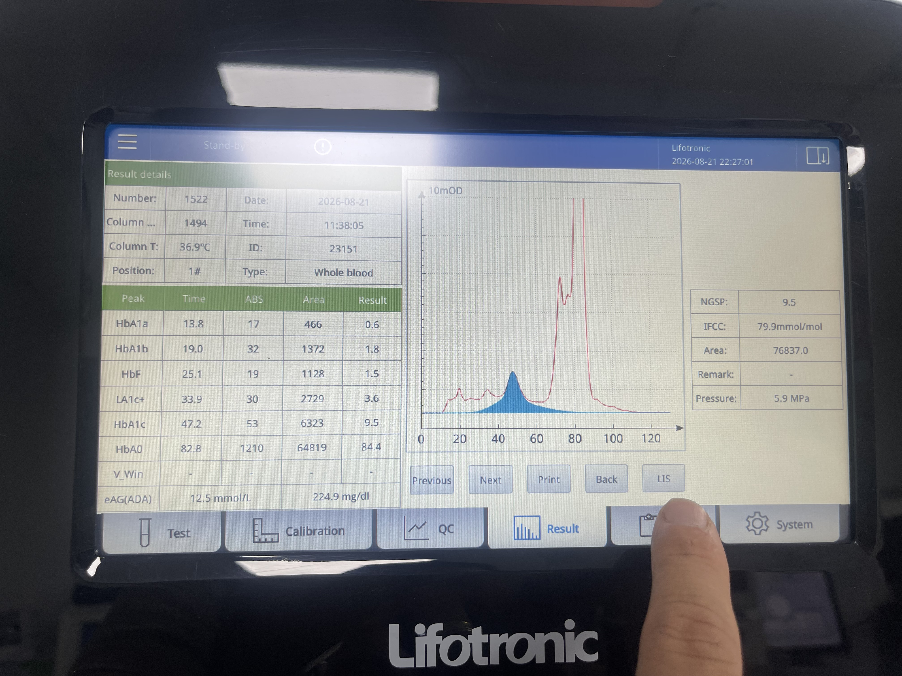
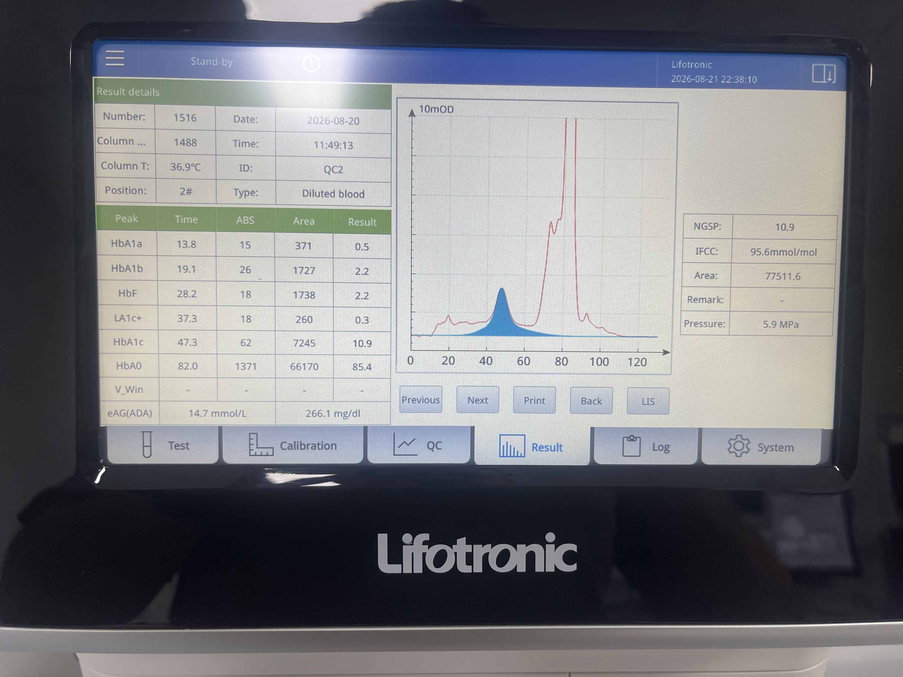
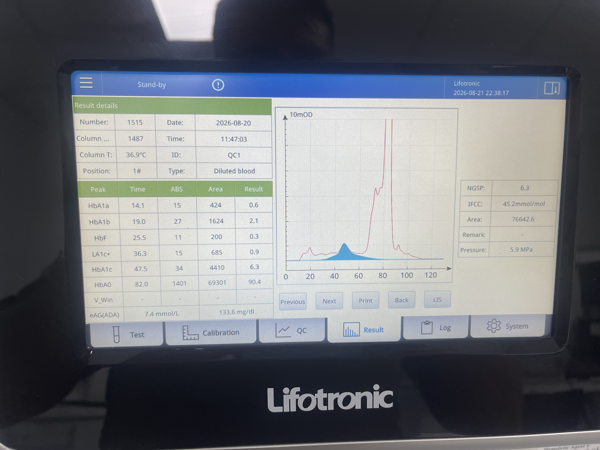
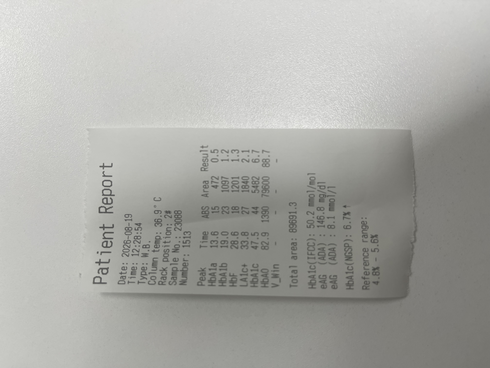

Ghid din capturi locale
Lifotronic H8
Configurare LIS ASTM prin rețea pentru readerul WiseMED. IP-urile vizibile în capturi sunt exemple; folosește adresele rețelei locale.
ASTMTCP/IPPort 80001. Deschide pagina LIS
- Din ecranul principal apasă System.
- În meniul lateral deschide Settings.
- Derulează până la secțiunea LIS.
- Activează LIS Upgrade și ASTM, ca în captură.
2. Configurează rețeaua
- Setează Local IP, Gateway și Netmask pentru analizor.
- La Server IP introdu IP-ul calculatorului pe care rulează readerul WiseMED.
- La Service IP Port introdu
8000, identic cumodules.transport-tcpip.port. - Folosește Network Test dacă este disponibil, apoi salvează setările.
Server IP nu este IP-ul analizorului. Este IP-ul calculatorului/readerului care ascultă mesajele ASTM.
3. Trimiterea rezultatelor
- După finalizarea unei probe, deschide Result.
- Verifică rezultatul în lista aparatului și păstrează LIS/ASTM active.
- Faceți o probă de transmitere și verificați în WiseMED Logs apariția
PARSED ASTM PACKAGEși asocierea rezultatului cu ID-ul probei.
Capturile documentează ecranul Results, dar nu arată un buton separat de Send. Dacă firmware-ul solicită validare manuală, validați rezultatul din ecranul Result și reluați testul de transmitere.
4. Capturi din aparat
{kind=link}

{kind=link}

{kind=link}

{kind=link}
{kind=link}

{kind=link}

{kind=link}

{kind=link}

{kind=link}
